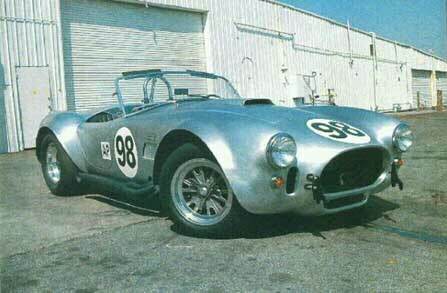
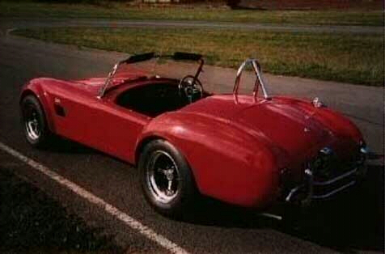

Shelby Cobra 427


Specs
Price |
$350,000 |
Top Speed |
185mph |
Acceleration |
|
Engine |
|
0-30mph |
N/A |
Type |
V8, 16valve OVH |
0-60mph |
4.5sec |
Displacement |
7.0L (427cu) |
0-100 |
10sec |
Power |
485hp@6500rpm |
1/4 mile |
12.7sec/112.7mph |
Torque |
480 lbs-ft@3500rpm |
Weight |
2,530 lbs |
Handling |
|
Gas mileage |
|
Skidpad |
1.04g (!!) |
City |
6mpg |
600ft slalom |
71.8 mph |
Highway |
9mpg |
Powertrain |
Front engined, rear wheel drive, 4 speed manual |
(? = incomplete data or unverified info, N/A = info Not Available)
Beyond the specs:
Say hello to the car that started the whole 50mph speed limit thing in America. This is the most memorable of all the classic cars ever created; it is the most widely recognized legend to ever hit the streets. This car humiliated Ferrari and easily dominated the road wherever it drove, it has amazing even by today's standards, and its handling is yet to be matched by any road. This car was a great influence on the Dodge Viper design which copies its idea of using a large powerful engine and wide tires on a light chassis, except for this cars weight was reduced a little more. This car is based on the AC Ace made by the British car company AC, but this car is a major change from the taller under-powered AC Ace. This car has immense torque and had to use a simple very strong 4-speed manual (anything less would have broken under the pressure) to handle the massive torque. Of course as the numbers show, the best part of this car is its acceleration that will blast you to the back of the seat. This car just a racing chassis and a massive engine with a simple exterior and two seats slapped on top of it. If you are asthmatic this car is not for you, if you like calm Sunday drives then this car was not meant for you. If you can not stand windy noise on the highway, then back off for this Shelby creation will torment you with the roaring turbulence created by its windshield. This is a car for die hard performance enthusiast who love the feel of raw power blasting them around the road even if it means you can not have an isolated cockpit (although the seating position is pretty of good).
~Oracle